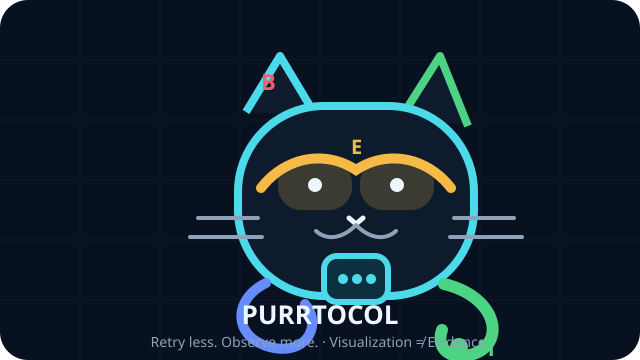

Recover.
Don't amplify.
A sanitized client-side failure study turned into a reproducible recovery architecture: history-aware state, low-amplification retries, provider-friendly congestion control, and a bilingual user Recovery Helper.
日本語概要：ChatGPTの会話読み込み失敗と429発生時のクライアント側挙動を、取得可能なデータから分析した再現可能なケーススタディです。観測・仮説・シミュレーションを分離し、利用者とサービス提供側の双方に負荷を増幅させにくい復旧設計を整理しています。
Observe first. Materialize once.
The proposed path preserves a distinction between a transport attempt, a logical recovery operation, a provisional success, and stable health.
One success is not necessarily recovery.
The trace motivates a history-aware state model: Blocked → Recovering → Healthy, with stable confirmation before expensive materialization.
Client-side recovery observations begin.
Snapshot 429 responses complete much faster than healthy snapshots.
The first Accessible result after Blocked is treated as Recovering E.
All eight observed E states returned to Blocked on the next observation.
Only then does the design permit full materialization and reconcile.
Start where your problem is.
I hit a loading / 429 failure
Use the bilingual local-only Recovery Helper. No telemetry, no automatic OpenAI requests.
I want the evidence boundary
See exactly what is observed, recomputed, simulated, proposed, weak external evidence, or explicitly unknown.
I want the recovery architecture
Follow single-flight, cheap observation, recovery hysteresis, bounded retries, and transport-survival invariants.
Go deeper.
30-second Brief
The whole project, evidence boundary, recovery proposal, and limits in one screen.
Reproduce
Minimal commands to recompute the public analysis locally without touching production services.
Evidence Explorer
A static visual index of the published trace and validation results.
パケニャの429教養講座
Sloppy mascot explanations, annoyingly rigorous footnotes.
Technical paper
Reproducible paper candidates are built and validated in Actions before deliberate merge.
Architecture record
Evidence boundaries, recovery hysteresis, and provider-friendly defaults.
Animated retry comparison
Visualize naive per-context recovery versus the provider-friendly stack.
Research Wiki
Evidence, models, congestion control, falsification targets, and project archaeology.
Evidence ledger
Every major claim is assigned an explicit evidentiary status.
User Recovery Helper
A practical troubleshooting surface designed to avoid request amplification.
用語解説 / Glossary
What E actually means, why Recovering is not R, and the rest of the project vocabulary.
- a reproducible client-side timing and transition analysis;
- strong within-capture evidence for provisional recovery behavior;
- simulation-tested low-amplification recovery strategies.
- OpenAI's internal root cause or service topology;
- production capacity, queue sizes, or rate-limit scope;
- that any one transport or client mechanism causes the failure.

Purrtocol exists.
The research is serious. The mascot is not evidence.
Purrtocol Expansion Dynamics
The mascot now has a commit-backed event log, exponential-growth fit, Hawkes model, observation-hazard toy model, and a canonical design bible. This does not modify the primary recovery evidence base.